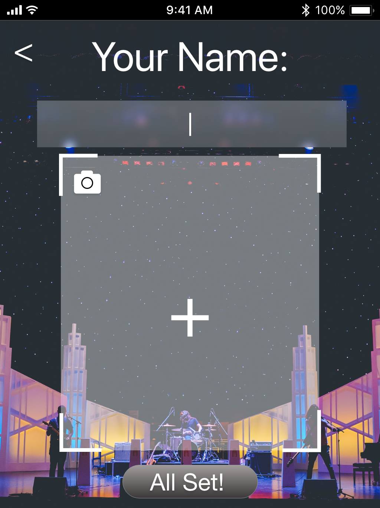
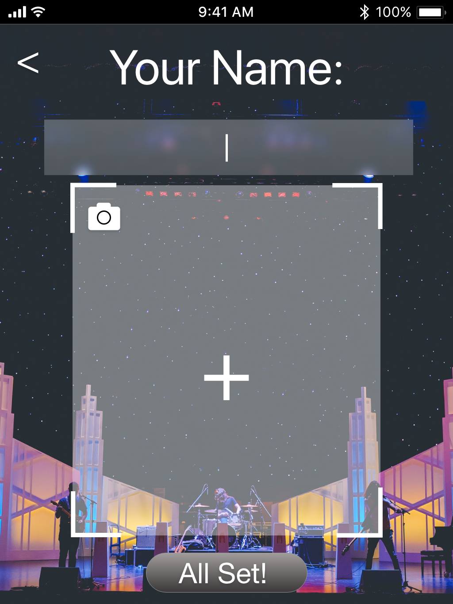

In thinking about how I was going to create a prototype for AR, I decided to work with the idea of having a more personal version of karaoke that transforms the user into their favorite popstar and allows them to dance on stage alongside them, without ever leaving their living room. I chose to have physical props to replicate the AR overlay, and lighting effects to transform the room into more of a performance environment. I started off by having the user interact with the wireframes just like they would set the app up in their home, and then tried for a smooth transition into the actual karaoke performance. I started thinking about a couple of things that needed to be included. The user needed to see themselves as the Popstar and on stage with the Popstar in real time so I used a large mirror for the testing.
The users weren’t able to actually use the wireframes like a real app so that was a bit confusing, even though I prefaced it by telling them they were wireframes and didn’t have complete functionality. The surprising part was that at first the user didn’t realize that Taylor Swift (the cut out) was performing with them because their eyes were too focused on the words of the song. I tried to combat this by putting the computer on a stool which helped, and move the cut out closer behind them. The best piece of feedback I got however, was the huge laugh when they both landed on the "perform" screen and saw a picture of themselves there with Taylor Swift's hair and torso photoshopped on top of their face.
For future testing I would like: 1. To do more with the costume. I want to transform them into the Popstar by having them wear a wig or special dress- something that feels more transformative. 2. To make the wireframes more interactive, and also do a better job explaining the limitations of the wireframes. There needs to be a way for there to be a way to incorporate links into Adobe XD, so that they can still use the prototype functionality of the wireframes by clicking buttons, but also link directly to the karaoke song. I tried using Keynote as well, but it doesn’t allow for clicking on specific areas to advance the screen. 3. To have a third person that they don’t see move the Popstar and props behind them. I could throw up a cardboard wall the user could stand in front of it and the “Popstar” could drop down behind them. The couch being the barrier didn’t work that well because it was too far away, the cut out of Taylor Swift needed to be closer.